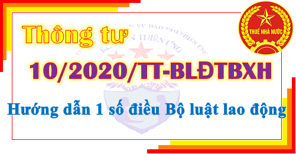

Thông tư 10/2020/TT-BLĐTBXH ngày 12/11/2020 của Bộ lao động thương binh xã hội quy định chi tiết và hướng dẫn thi hành một số điều của Bộ luật lao động. Có hiệu lực thi hành kể từ ngày 01 tháng 01 năm 2021.
|
BỘ LAO ĐỘNG - THƯƠNG BINH VÀ XÃ HỘI -------- |
CỘNG HÒA XÃ HỘI CHỦ NGHĨA VIỆT NAM Độc lập - Tự do - Hạnh phúc --------------- |
| Số: 10/2020/TT-BLĐTBXH | Hà Nội, ngày 12 tháng 11 năm 2020 |
THÔNG TƯ
QUY ĐỊNH CHI TIẾT VÀ HƯỚNG DẪN THI HÀNH MỘT SỐ ĐIỀU CỦA BỘ LUẬT LAO ĐỘNG VỀ NỘI DUNG CỦA HỢP ĐỒNG LAO ĐỘNG, HỘI ĐỒNG THƯƠNG LƯỢNG TẬP THỂ VÀ NGHỀ, CÔNG VIỆC CÓ ẢNH HƯỞNG XẤU TỚI CHỨC NĂNG SINH SẢN, NUÔI CON
Căn cứ Bộ luật Lao động ngày 20 tháng 11 năm 2019;QUY ĐỊNH CHI TIẾT VÀ HƯỚNG DẪN THI HÀNH MỘT SỐ ĐIỀU CỦA BỘ LUẬT LAO ĐỘNG VỀ NỘI DUNG CỦA HỢP ĐỒNG LAO ĐỘNG, HỘI ĐỒNG THƯƠNG LƯỢNG TẬP THỂ VÀ NGHỀ, CÔNG VIỆC CÓ ẢNH HƯỞNG XẤU TỚI CHỨC NĂNG SINH SẢN, NUÔI CON
Căn cứ Nghị định số 14/2017/NĐ-CP ngày 17 tháng 02 năm 2017 của Chính phủ quy định chức năng, nhiệm vụ, quyền hạn và cơ cấu tổ chức của Bộ Lao động – Thương binh và Xã hội;
Theo đề nghị của Cục trưởng Cục Quan hệ lao động và Tiền lương, Cục trưởng Cục An toàn lao động;
Bộ trưởng Bộ Lao động – Thương binh và Xã hội ban hành Thông tư quy định chi tiết và hướng dẫn thi hành một số điều của Bộ luật Lao động về nội dung của hợp đồng lao động, Hội đồng thương lượng tập thể và nghề, công việc có ảnh hưởng xấu tới chức năng sinh sản, nuôi con.
Chương I
NHỮNG QUY ĐỊNH CHUNG
Điều 1. Phạm vi điều chỉnhNHỮNG QUY ĐỊNH CHUNG
Thông tư này quy định chi tiết và hướng dẫn thi hành một số điều, khoản sau đây của Bộ luật Lao động:
1. Nội dung của hợp đồng lao động theo khoản 1, 2 và 3 Điều 21.
2. Chức năng, nhiệm vụ và hoạt động của Hội đồng thương lượng tập thể theo khoản 4 Điều 73.
3. Danh mục nghề, công việc có ảnh hưởng xấu tới chức năng sinh sản và nuôi con theo khoản 1 Điều 142.
Điều 2. Đối tượng áp dụng
1. Người lao động, người sử dụng lao động theo khoản 1, khoản 2 và khoản 3 Điều 2 của Bộ luật Lao động.
2. Cơ quan, tổ chức, cá nhân khác có liên quan trực tiếp đến việc thực hiện quy định tại Thông tư này.
Chương II
NỘI DUNG CỦA HỢP ĐỒNG LAO ĐỘNG
Điều 3. Nội dung chủ yếu của hợp đồng lao độngNỘI DUNG CỦA HỢP ĐỒNG LAO ĐỘNG
Nội dung chủ yếu phải có của hợp đồng lao động theo khoản 1 Điều 21 của Bộ luật Lao động được quy định như sau:
1. Thông tin về tên, địa chỉ của người sử dụng lao động và họ tên, chức danh của người giao kết hợp đồng lao động bên phía người sử dụng lao động được quy định như sau:
a) Tên của người sử dụng lao động: đối với doanh nghiệp, cơ quan, tổ chức, hợp tác xã, liên hiệp hợp tác xã thì lấy theo tên của doanh nghiệp, cơ quan, tổ chức, hợp tác xã, liên hiệp hợp tác xã ghi trong giấy chứng nhận đăng ký doanh nghiệp, hợp tác xã, liên hiệp hợp tác xã hoặc giấy chứng nhận đăng ký đầu tư hoặc văn bản chấp thuận chủ trương đầu tư hoặc quyết định thành lập cơ quan, tổ chức; đối với tổ hợp tác thì lấy theo tên tổ hợp tác ghi trong hợp đồng hợp tác; đối với hộ gia đình, cá nhân thì lấy theo họ tên của người đại diện hộ gia đình, cá nhân ghi trong Căn cước công dân hoặc Chứng minh nhân dân hoặc hộ chiếu được cấp;
b) Địa chỉ của người sử dụng lao động: đối với doanh nghiệp, cơ quan, tổ chức, hợp tác xã, liên hiệp hợp tác xã thì lấy theo địa chỉ ghi trong giấy chứng nhận đăng ký doanh nghiệp, hợp tác xã, liên hiệp hợp tác xã hoặc giấy chứng nhận đăng ký đầu tư hoặc văn bản chấp thuận chủ trương đầu tư hoặc quyết định thành lập cơ quan, tổ chức; đối với tổ hợp tác thì lấy theo địa chỉ trong hợp đồng hợp tác; đối với hộ gia đình, cá nhân thì lấy theo địa chỉ nơi cư trú của hộ gia đình, cá nhân đó; số điện thoại, địa chỉ thư điện tử (nếu có);
c) Họ tên, chức danh của người giao kết hợp đồng lao động bên phía người sử dụng lao động: ghi theo họ tên, chức danh của người có thẩm quyền giao kết hợp đồng lao động theo quy định tại khoản 3 Điều 18 của Bộ luật Lao động.
2. Thông tin về họ tên, ngày tháng năm sinh, giới tính, nơi cư trú, số thẻ Căn cước công dân hoặc Chứng minh nhân dân hoặc hộ chiếu của người giao kết hợp đồng lao động bên phía người lao động và một số thông tin khác, gồm:
a) Họ tên, ngày tháng năm sinh, giới tính, địa chỉ nơi cư trú, số điện thoại, địa chỉ thư điện tử (nếu có), số thẻ Căn cước công dân hoặc Chứng minh nhân dân hoặc hộ chiếu do cơ quan có thẩm quyền cấp của người giao kết hợp đồng lao động bên phía người lao động theo quy định tại khoản 4 Điều 18 của Bộ luật Lao động;
b) Số giấy phép lao động hoặc văn bản xác nhận không thuộc diện cấp giấy phép lao động do cơ quan có thẩm quyền cấp đối với người lao động là người nước ngoài;
c) Họ tên, địa chỉ nơi cư trú, số thẻ Căn cước công dân hoặc Chứng minh nhân dân hoặc hộ chiếu, số điện thoại, địa chỉ thư điện tử (nếu có) của người đại diện theo pháp luật của người chưa đủ 15 tuổi.
3. Công việc và địa điểm làm việc được quy định như sau:
a) Công việc: những công việc mà người lao động phải thực hiện;
b) Địa điểm làm việc của người lao động: địa điểm, phạm vi người lao động làm công việc theo thỏa thuận; trường hợp người lao động làm việc có tính chất thường xuyên ở nhiều địa điểm khác nhau thì ghi đầy đủ các địa điểm đó.
4. Thời hạn của hợp đồng lao động: thời gian thực hiện hợp đồng lao động (số tháng hoặc số ngày), thời điểm bắt đầu và thời điểm kết thúc thực hiện hợp đồng lao động (đối với hợp đồng lao động xác định thời hạn); thời điểm bắt đầu thực hiện hợp đồng lao động (đối với hợp đồng lao động không xác định thời hạn).
5. Mức lương theo công việc hoặc chức danh, hình thức trả lương, kỳ hạn trả lương, phụ cấp lương và các khoản bổ sung khác được quy định như sau:
a) Mức lương theo công việc hoặc chức danh: ghi mức lương tính theo thời gian của công việc hoặc chức danh theo thang lương, bảng lương do người sử dụng lao động xây dựng theo quy định tại Điều 93 của Bộ luật Lao động; đối với người lao động hưởng lương theo sản phẩm hoặc lương khoán thì ghi mức lương tính theo thời gian để xác định đơn giá sản phẩm hoặc lương khoán;
b) Phụ cấp lương theo thỏa thuận của hai bên như sau:
b1) Các khoản phụ cấp lương để bù đắp yếu tố về điều kiện lao động, tính chất phức tạp công việc, điều kiện sinh hoạt, mức độ thu hút lao động mà mức lương thỏa thuận trong hợp đồng lao động chưa được tính đến hoặc tính chưa đầy đủ;
b2) Các khoản phụ cấp lương gắn với quá trình làm việc và kết quả thực hiện công việc của người lao động.
c) Các khoản bổ sung khác theo thỏa thuận của hai bên như sau:
c1) Các khoản bổ sung xác định được mức tiền cụ thể cùng với mức lương thỏa thuận trong hợp đồng lao động và trả thường xuyên trong mỗi kỳ trả lương;
c2) Các khoản bổ sung không xác định được mức tiền cụ thể cùng với mức lương thỏa thuận trong hợp đồng lao động, trả thường xuyên hoặc không thường xuyên trong mỗi kỳ trả lương gắn với quá trình làm việc, kết quả thực hiện công việc của người lao động.
Đối với các chế độ và phúc lợi khác như thưởng theo quy định tại Điều 104 của Bộ luật Lao động, tiền thưởng sáng kiến; tiền ăn giữa ca; các khoản hỗ trợ xăng xe, điện thoại, đi lại, tiền nhà ở, tiền giữ trẻ, nuôi con nhỏ; hỗ trợ khi người lao động có thân nhân bị chết, người lao động có người thân kết hôn, sinh nhật của người lao động, trợ cấp cho người lao động gặp hoàn cảnh khó khăn khi bị tai nạn lao động, bệnh nghề nghiệp và các khoản hỗ trợ, trợ cấp khác thì ghi thành mục riêng trong hợp đồng lao động.
d) Hình thức trả lương do hai bên xác định theo quy định tại Điều 96 của Bộ luật Lao động;
đ) Kỳ hạn trả lương do hai bên xác định theo quy định tại Điều 97 của Bộ luật Lao động.
6. Chế độ nâng bậc, nâng lương: theo thỏa thuận của hai bên về điều kiện, thời gian, mức lương sau khi nâng bậc, nâng lương hoặc thực hiện theo thỏa ước lao động tập thể, quy định của người sử dụng lao động.
7. Thời giờ làm việc, thời giờ nghỉ ngơi: theo thỏa thuận của hai bên hoặc thỏa thuận thực hiện theo nội quy lao động, quy định của người sử dụng lao động, thỏa ước lao động tập thể và quy định của pháp luật.
8. Trang bị bảo hộ lao động cho người lao động: những loại phương tiện bảo vệ cá nhân trong lao động theo thỏa thuận của hai bên hoặc theo thỏa ước lao động tập thể hoặc theo quy định của người sử dụng lao động và quy định của pháp luật về an toàn, vệ sinh lao động.
9. Bảo hiểm xã hội, bảo hiểm y tế và bảo hiểm thất nghiệp: theo quy định của pháp luật về lao động, bảo hiểm xã hội, bảo hiểm y tế và bảo hiểm thất nghiệp.
10. Đào tạo, bồi dưỡng, nâng cao trình độ, kỹ năng nghề: quyền, nghĩa vụ và lợi ích của người sử dụng lao động và người lao động trong việc bảo đảm thời gian, kinh phí đào tạo, bồi dưỡng, nâng cao trình độ, kỹ năng nghề.
Điều 4. Bảo vệ bí mật kinh doanh, bí mật công nghệ
1. Khi người lao động làm việc có liên quan trực tiếp đến bí mật kinh doanh, bí mật công nghệ theo quy định của pháp luật thì người sử dụng lao động có quyền thỏa thuận với người lao động về nội dung bảo vệ bí mật kinh doanh, bí mật công nghệ trong hợp đồng lao động hoặc bằng văn bản khác theo quy định của pháp luật.
2. Thỏa thuận về bảo vệ bí mật kinh doanh, bí mật công nghệ có thể gồm những nội dung chủ yếu sau:
a) Danh mục bí mật kinh doanh, bí mật công nghệ;
b) Phạm vi sử dụng bí mật kinh doanh, bí mật công nghệ;
c) Thời hạn bảo vệ bí mật kinh doanh, bí mật công nghệ;
d) Phương thức bảo vệ bí mật kinh doanh, bí mật công nghệ;
đ) Quyền, nghĩa vụ, trách nhiệm của người lao động, người sử dụng lao động trong thời hạn bảo vệ bí mật kinh doanh, bí mật công nghệ;
e) Xử lý vi phạm thỏa thuận bảo vệ bí mật kinh doanh, bí mật công nghệ.
3. Khi phát hiện người lao động vi phạm thỏa thuận bảo vệ bí mật kinh doanh, bí mật công nghệ thì người sử dụng lao động có quyền yêu cầu người lao động bồi thường theo thỏa thuận của hai bên. Trình tự, thủ tục xử lý bồi thường được thực hiện như sau:
a) Trường hợp phát hiện người lao động có hành vi vi phạm trong thời hạn thực hiện hợp đồng lao động thì xử lý theo trình tự, thủ tục xử lý việc bồi thường thiệt hại quy định tại khoản 2 Điều 130 của Bộ luật Lao động;
b) Trường hợp phát hiện người lao động có hành vi vi phạm sau khi chấm dứt hợp đồng lao động thì xử lý theo quy định của pháp luật dân sự và pháp luật khác có liên quan.
4. Đối với bí mật kinh doanh, bí mật công nghệ thuộc danh mục bí mật nhà nước thì thực hiện theo quy định của pháp luật về bảo vệ bí mật nhà nước.
Điều 5. Nội dung chủ yếu của hợp đồng lao động trong lĩnh vực nông nghiệp, lâm nghiệp, ngư nghiệp, diêm nghiệp
1. Hợp đồng lao động đối với người lao động làm việc trong lĩnh vực nông nghiệp, lâm nghiệp, ngư nghiệp, diêm nghiệp bao gồm các nội dung chủ yếu của hợp đồng lao động theo khoản 1 Điều 21 của Bộ luật Lao động và Điều 3 Thông tư này. Đối với những công việc có tính chất giản đơn, thực hiện trong thời gian ngắn hạn hoặc theo mùa vụ thì hai bên có thể giảm nội dung thỏa thuận về nâng bậc quy định tại điểm e khoản 1 Điều 21 và đào tạo, bồi dưỡng, nâng cao trình độ, kỹ năng nghề quy định tại điểm k khoản 1 Điều 21 của Bộ luật Lao động.
2. Đối với những công việc và địa điểm làm việc chịu ảnh hưởng trực tiếp của thiên tai, hỏa hoạn, thời tiết thì hai bên có thể thỏa thuận trong hợp đồng lao động những nội dung về cơ chế giải quyết việc thực hiện hợp đồng lao động phù hợp với điều kiện thực tế và quy định của pháp luật.
Chương III
HỘI ĐỒNG THƯƠNG LƯỢNG TẬP THỂ
1. Khi có nhu cầu thương lượng tập thể có nhiều doanh nghiệp tham gia thông qua Hội đồng thương lượng tập thể, trên cơ sở đồng thuận, người sử dụng lao động và các tổ chức đại diện người lao động tại cơ sở của các doanh nghiệp tham gia thương lượng tập thể nhiều doanh nghiệp (sau đây gọi là các bên) cử một người đại diện gửi văn bản đề nghị thành lập Hội đồng thương lượng tập thể đến Ủy ban nhân dân tỉnh, thành phố trực thuộc Trung ương (sau đây gọi là Ủy ban nhân dân cấp tỉnh) nơi đặt trụ sở chính của các doanh nghiệp hoặc nơi được các bên lựa chọn theo quy định tại khoản 1 Điều 73 của Bộ luật Lao động.
2. Văn bản đề nghị thành lập Hội đồng thương lượng tập thể phải có các thông tin chủ yếu sau:
a) Danh sách dự kiến các doanh nghiệp tham gia thương lượng tập thể nhiều doanh nghiệp, trong đó ghi rõ tên doanh nghiệp; trụ sở chính; họ tên của người đại diện theo pháp luật của doanh nghiệp; họ tên người đại diện của tổ chức đại diện người lao động tại cơ sở;
b) Họ tên, chức vụ hoặc chức danh của người được các bên đồng thuận cử làm Chủ tịch Hội đồng thương lượng tập thể, kèm theo văn bản đồng ý của người được đề nghị làm Chủ tịch Hội đồng thương lượng tập thể. Trường hợp trong văn bản không đề nghị người làm Chủ tịch Hội đồng thương lượng tập thể thì Chủ tịch Ủy ban nhân dân cấp tỉnh quyết định;
c) Danh sách các thành viên đại diện của mỗi bên tham gia thương lượng trong Hội đồng thương lượng tập thể;
d) Dự kiến nội dung đã được các bên thống nhất về nội dung thương lượng, thời gian hoạt động của Hội đồng thương lượng tập thể, kế hoạch thương lượng tập thể, hoạt động hỗ trợ của Hội đồng thương lượng tập thể (nếu có).
3. Trong thời hạn 20 ngày làm việc kể từ ngày nhận được văn bản yêu cầu của đại diện các bên thương lượng tập thể có nhiều doanh nghiệp, Ủy ban nhân dân cấp tỉnh có trách nhiệm ban hành quyết định thành lập Hội đồng thương lượng tập thể. Trường hợp không quyết định thành lập Hội đồng thương lượng tập thể thì phải có văn bản trả lời nêu rõ lý do.
4. Sở Lao động - Thương binh và Xã hội có trách nhiệm chủ trì, phối hợp với Liên đoàn Lao động cấp tỉnh, tổ chức đại diện người sử dụng lao động cấp tỉnh, các doanh nghiệp đề nghị thành lập Hội đồng thương lượng tập thể và các tổ chức, doanh nghiệp có liên quan để tham mưu, trình Ủy ban nhân dân cấp tỉnh phương án thành lập Hội đồng thương lượng tập thể. Nội dung phương án bao gồm các nội dung chủ yếu sau:
a) Cơ cấu thành phần của Hội đồng thương lượng tập thể, gồm:
a1) Chủ tịch Hội đồng thương lượng tập thể;
a2) Đại diện Ủy ban nhân dân cấp tỉnh;
a3) Đại diện thương lượng tập thể của các bên;
a4) Các bộ phận khác (nếu có).
b) Chức năng, nhiệm vụ của Hội đồng thương lượng tập thể, Chủ tịch Hội đồng thương lượng tập thể và các bộ phận khác (nếu có).
c) Thời gian hoạt động của Hội đồng thương lượng tập thể.
d) Kế hoạch hoạt động của Hội đồng thương lượng tập thể.
đ) Kinh phí hoạt động của Hội đồng thương lượng tập thể.
e) Dự thảo quyết định thành lập Hội đồng thương lượng tập thể.
Trường hợp Sở Lao động - Thương binh và Xã hội đề nghị không thành lập Hội đồng thương lượng tập thể thì nêu rõ lý do.
5. Trong quá trình hoạt động, khi cần thay đổi Chủ tịch Hội đồng thương lượng tập thể, đại diện Ủy ban nhân dân cấp tỉnh, chức năng, nhiệm vụ, kế hoạch, thời gian hoạt động của Hội đồng thương lượng tập thể để phù hợp với tình hình thực tế thì Chủ tịch Hội đồng thương lượng tập thể đương nhiệm đề nghị Ủy ban nhân dân cấp tỉnh xem xét, quyết định.
Trong thời hạn 07 ngày làm việc kể từ ngày nhận được đề nghị của Chủ tịch Hội đồng thương lượng tập thể đương nhiệm, Ủy ban nhân dân cấp tỉnh xem xét, sửa đổi, bổ sung quyết định thành lập Hội đồng thương lượng tập thể. Trường hợp không sửa đổi, bổ sung thì phải có văn bản trả lời nêu rõ lý do.
Điều 7. Chức năng của Hội đồng thương lượng tập thể
Hội đồng thương lượng tập thể có chức năng tổ chức cho đại diện của các bên tiến hành thương lượng tập thể theo quy định của Bộ luật Lao động.
Điều 8. Nhiệm vụ của Hội đồng thương lượng tập thể
1. Lập kế hoạch để tiến hành thương lượng tập thể trên cơ sở đề xuất của các bên và theo quyết định thành lập Hội đồng thương lượng tập thể.
2. Tổ chức, điều phối các phiên họp để đại diện các bên thương lượng.
3. Hỗ trợ, cung cấp thông tin liên quan để đại diện các bên thương lượng.
4. Hỗ trợ để các bên tiến hành lấy ý kiến về nội dung dự thảo thỏa ước lao động tập thể nhiều doanh nghiệp theo quy định tại khoản 2 và khoản 3 Điều 76 của Bộ luật Lao động.
5. Tổ chức ký kết thỏa ước lao động tập thể nhiều doanh nghiệp theo quy định tại khoản 4 Điều 76 của Bộ luật Lao động.
6. Giám sát việc thực hiện thỏa ước lao động tập thể nhiều doanh nghiệp theo quyết định thành lập Hội đồng thương lượng tập thể, bảo đảm phù hợp với thời gian hoạt động của Hội đồng.
7. Báo cáo kết quả hoạt động của Hội đồng thương lượng tập thể với Ủy ban nhân dân cấp tỉnh, đồng thời gửi Sở Lao động – Thương binh và Xã hội.
8. Thực hiện các nhiệm vụ khác theo yêu cầu của các bên và nhiệm vụ theo quyết định thành lập Hội đồng thương lượng tập thể.
Điều 9. Hoạt động của Hội đồng thương lượng tập thể
1. Hội đồng thương lượng tập thể làm việc thông qua các phiên họp.
2. Đại diện thương lượng của bên người sử dụng lao động và bên tổ chức đại diện người lao động tại cơ sở có trách nhiệm tiến hành thương lượng theo khoản 1 và khoản 2 Điều 72 của Bộ luật Lao động và quyết định kết quả thương lượng thông qua phiên họp của Hội đồng.
3. Chủ tịch Hội đồng thương lượng tập thể có trách nhiệm:
a) Tổ chức, điều phối các phiên họp của Hội đồng để đại diện các bên thương lượng theo quy định;
b) Xem xét, quyết định bổ sung, thay thế người đại diện tham gia thương lượng của mỗi bên; chấp nhận đề nghị tham gia Hội đồng thương lượng tập thể của các doanh nghiệp khác sau khi được sự đồng thuận của đại diện các bên trong Hội đồng thương lượng tập thể;
c) Quyết định thành lập bộ phận giúp việc Hội đồng, Chủ tịch Hội đồng để hỗ trợ hoạt động thương lượng tập thể của các bên.
4. Đại diện Ủy ban nhân dân cấp tỉnh có trách nhiệm hỗ trợ, cung cấp các thông tin cần thiết để các bên tiến hành thương lượng.
5. Hội đồng thương lượng tập thể tự giải thể khi hết thời gian hoạt động theo quyết định thành lập Hội đồng thương lượng tập thể. Trường hợp các bên có thỏa thuận khác thì Chủ tịch Hội đồng thương lượng tập thể đề nghị Ủy ban nhân dân cấp tỉnh xem xét, quyết định.
6. Kinh phí hoạt động của Hội đồng thương lượng tập thể do người sử dụng lao động và tổ chức đại diện người lao động tại cơ sở ở các doanh nghiệp tham gia thương lượng thỏa thuận đóng góp và huy động từ các nguồn hợp pháp khác theo quy định của pháp luật.
Chương IV
DANH MỤC NGHỀ, CÔNG VIỆC CÓ ẢNH HƯỞNG XẤU TỚI CHỨC NĂNG SINH SẢN VÀ NUÔI CON
Danh mục nghề, công việc có ảnh hưởng xấu tới chức năng sinh sản và nuôi con được ban hành tại Phụ lục kèm theo Thông tư này, bao gồm:
1. Các nghề, công việc có ảnh hưởng xấu tới chức năng sinh sản và nuôi con của lao động nữ;
2. Các nghề, công việc có ảnh hưởng xấu tới chức năng sinh sản của lao động nam.
Điều 11. Trách nhiệm của người sử dụng lao động và người lao động trong việc thực hiện danh mục nghề, công việc có ảnh hưởng xấu tới chức năng sinh sản và nuôi con
1. Người sử dụng lao động có trách nhiệm:
a) Thực hiện công bố công khai để người lao động biết về những nghề, công việc có ảnh hưởng xấu tới chức năng sinh sản và nuôi con đang có tại nơi làm việc (sau đây gọi tắt là nghề, công việc có ảnh hưởng xấu tới chức năng sinh sản và nuôi con);
b) Cung cấp đầy đủ thông tin về tác hại cũng như các biện pháp phòng, chống các yếu tố nguy hiểm, yếu tố có hại của các nghề, công việc có ảnh hưởng xấu tới chức năng sinh sản và nuôi con để người lao động lựa chọn, quyết định làm việc; thực hiện khám sức khỏe trước khi bố trí làm việc, khám sức khỏe định kỳ, khám bệnh nghề nghiệp và bảo đảm điều kiện an toàn, vệ sinh lao động theo quy định của pháp luật, khi sử dụng người lao động làm nghề, công việc có ảnh hưởng xấu tới chức năng sinh sản và nuôi con.
2. Người lao động có trách nhiệm:
a) Tìm hiểu kỹ về nghề, công việc có ảnh hưởng xấu tới chức năng sinh sản và nuôi con để xem xét, quyết định việc giao kết, sửa đổi, bổ sung và thực hiện hợp đồng lao động theo quy định;
b) Tuân thủ các quy định pháp luật về an toàn, vệ sinh lao động khi làm nghề, công việc có ảnh hưởng xấu tới chức năng sinh sản và nuôi con theo hợp đồng lao động.
Chương V
ĐIỀU KHOẢN THI HÀNH
1. Thông tư này có hiệu lực thi hành kể từ ngày 01 tháng 01 năm 2021.
2. Kể từ ngày Thông tư này có hiệu lực thi hành, các Thông tư sau đây hết hiệu lực thi hành:
a) Thông tư số 47/2015/TT-BLĐTBXH ngày 16 tháng 11 năm 2015 của Bộ trưởng Bộ Lao động - Thương binh và Xã hội hướng dẫn thực hiện một số điều về hợp đồng lao động, kỷ luật lao động, trách nhiệm vật chất của Nghị định số 05/2015/NĐ-CP ngày 12 tháng 01 năm 2015 của Chính phủ quy định chi tiết và hướng dẫn thi hành một số nội dung của Bộ luật Lao động;
b) Thông tư số 26/2013/TT-BLĐTBXH ngày 18 tháng 10 năm 2013 của Bộ trưởng Bộ Lao động - Thương binh và Xã hội ban hành Danh mục công việc không được sử dụng lao động nữ.
3. Tiền lương làm căn cứ tính trả trợ cấp thôi việc, trợ cấp mất việc làm là tiền lương bình quân theo hợp đồng lao động, bao gồm mức lương, phụ cấp lương và các khoản bổ sung khác quy định tại điểm a, tiết b1 điểm b và tiết c1 điểm c khoản 5 Điều 3 Thông tư này của 06 tháng liền kề trước khi người lao động thôi việc, mất việc làm.
Trong quá trình thực hiện nếu có vướng mắc, đề nghị các cơ quan, đơn vị và doanh nghiệp phản ánh về Bộ Lao động - Thương binh và Xã hội để hướng dẫn bổ sung kịp thời./.
|
Nơi nhận: - Thủ tướng và các Phó Thủ tướng Chính phủ; - Văn phòng Trung ương Đảng và các Ban của Đảng; - Văn phòng Quốc hội, - Văn phòng Chủ tịch nước; - Văn phòng Chính phủ; - Các Bộ, cơ quan ngang Bộ, cơ quan thuộc Chính phủ; - Tòa án nhân dân tối cao; - Viện Kiểm sát nhân dân tối cao; - Kiểm toán Nhà nước; - Cơ quan Trung ương các đoàn thể và các Hội; - Cục Kiểm tra văn bản QPPL (Bộ Tư pháp); - HĐND, UBND, Sở LĐTBXH các tỉnh, thành phố trực thuộc Trung ương; - Công báo, Cổng thông tin điện tử Chính phủ; - Cổng thông tin điện tử Bộ LĐTBXH; - Lưu: Văn thư, Cục QHLĐTL, Cục ATLĐ (30 bản). |
BỘ TRƯỞNG
Đào Ngọc Dung
|
-----------------------------------------------------------------
PHỤ LỤC
DANH MỤC NGHỀ, CÔNG VIỆC CÓ ẢNH HƯỞNG XẤU TỚI CHỨC NĂNG SINH SẢN VÀ NUÔI CON
(Kem theo Thông tư tư số 10/2020/TT-BLĐTBXH ngày 12 tháng 11 năm 2020 của Bộ trưởng Bộ Lao động – Thương binh và Xã hội)
Phần I
Các nghề, công việc có ảnh hưởng xấu tới chức năng sinh sản và nuôi con của lao động nữ
Mục 1
Các nghề, công việc được áp dụng chung cho tất cả lao động nữ
Các nghề, công việc có ảnh hưởng xấu tới chức năng sinh sản và nuôi con của lao động nữ theo quy định tại khoản 1 Điều 142 của Bộ luật lao động như sau:Các nghề, công việc được áp dụng chung cho tất cả lao động nữ
1. Trực tiếp nấu chảy và rót kim loại nóng chảy ở các lò:
1.1. Lò điện hồ quang từ 0,5 tấn trở lên;
1.2. Lò quay bilo (luyện gang);
1.3. Lò bằng (luyện thép);
1.4. Lò cao.
2. Cán kim loại nóng (trừ kim loại màu).
3. Trực tiếp luyện quặng kim loại màu (đồng, chì, thiếc, thủy ngân, kẽm, bạc).
4. Đốt lò luyện cốc.
5. Hàn trong thùng kín, hàn ở vị trí có độ cao trên 10m so với mặt sàn công tác.
6. Khoan thăm dò, khoan nổ mìn bắn mìn.
7. Cậy bẩy đá trên núi.
8. Lắp đặt giàn khoan trên biển.
9. Khoan thăm dò giếng dầu và khí.
10. Làm việc theo ca thường xuyên ở giàn khoan trên biển (trừ dịch vụ y tế - xã hội, dịch vụ ăn ở).
11. Bảo dưỡng, sửa chữa đường dây điện trong cống ngầm hoặc trên cột ngoài trời, đường dây điện cao thế, lắp dựng cột điện cao thế.
12. Bảo dưỡng, lắp dựng, sửa chữa cột cao qua sông, cột ăngten.
13. Làm việc trong thùng chìm.
14. Trực tiếp căn chỉnh trong thi công tấm lớn hoặc cấu kiện lớn bằng phương pháp thủ công.
15. Trực tiếp đào giếng, thi công hoàn thiện giếng bằng phương pháp thủ công.
16. Trực tiếp đào gốc cây lớn, chặt hạ cây lớn, vận xuất, xeo bắn, bốc xếp gỗ lớn, cưa xẻ thủ công cây gỗ lớn có đường kính lớn hơn 40 cm bằng phương pháp thủ công; cưa cắt cành, tỉa cành ở độ cao trên 5m bằng phương pháp thủ công.
17. Sử dụng các loại máy cầm tay chạy bằng hơi ép có sức ép từ 4 át-mốt- phe trở lên (như máy khoan, máy búa).
18. Lái máy thi công hạng nặng có công suất lớn hơn 36 mã lực như: máy xúc, máy gạt ủi, xe bánh xích (trừ các máy có hỗ trợ thủy lực).
19. Các công việc sơn, sửa, xây, trát, vệ sinh, trang trí trên mặt ngoài các công trình cao tầng (từ tầng 3 trở lên hoặc ở độ cao trên 12m so với sàn công tác) không có máy, cẩu nâng hoặc giàn giáo kiên cố.
20. Mò vớt gỗ chìm, cánh kéo gỗ trong âu, triền đưa gỗ lên bờ.
21. Xuôi bè mảng trên sông có nhiều ghềnh thác.
22. Khai thác tổ yến (trừ trường hợp khai thác tổ yến trong các nhà nuôi yến); khai thác phân dơi.
23. Các công việc trên tàu đi biển (trừ công việc phục vụ nhà hàng, buồng, bàn, lễ tân trên các tàu du lịch).
24. Công việc gác tàu, trông tàu trong âu, triền đà.
25. Vận hành nồi hơi (trừ việc vận hành tự động, vận hành nồi hơi sử dụng năng lượng là dầu và điện).
26. Lái xe lửa (trừ xe lửa có chế độ vận hành tự động hóa cao, các tàu chạy trong nội đô, tuyến du lịch).
27. Các công việc đóng vỏ tàu (tàu gỗ, tàu sắt), phải mang vác, gá đặt vật gia công nặng 30 kg trở lên.
28. Khảo sát đường sông ở những vùng có thác ghềnh cao, núi sâu nguy hiểm.
29. Vận hành tàu hút bùn; lái cẩu nổi.
30. Lái ôtô có trọng tải trên 2,5 tấn (trừ các ô tô trọng tải dưới 10 tấn có hệ thống trợ lực).
31. Các công việc phải mang vác trên 50kg.
32. Vận hành máy hồ, máy nhuộm các loại, máy văng sấy, máy kiểm bóng, máy phòng co (trừ các máy có chế độ vận hành tự động hóa).
33. Cán ép tấm da lớn, cứng (trừ các máy có chế độ vận hành tự động hóa).
34. Lái máy kéo nông nghiệp có công suất từ 50 mã lực trở lên.
35. Mổ tử thi, liệm, mai táng người chết (trừ điện táng), bốc mồ mả.
36. Đổ bê tông dưới nước; thợ lặn.
37. Nạo vét cống ngầm (trừ nạo vét tự động, bằng máy); Công việc phải ngâm mình thường xuyên dưới nước bẩn (từ 04 giờ trong một ngày trở lên, trên 3 ngày trong 1 tuần).
38. Đào lò; đào lò giếng; các công việc trong hầm mỏ (trừ dịch vụ y tế - xã hội và các công việc đột xuất theo yêu cầu quản lý điều hành, nhưng phải tuân thủ theo đúng các quy chuẩn kỹ thuật quốc gia hiện hành về an toàn và các quy định về tiêu chuẩn sức khỏe đối với lao động làm việc trong hầm mỏ).
39. Vận hành lò phản ứng hạt nhân nghiên cứu nhà máy điện hạt nhân.
40. Sử dụng chất phóng xạ.
41. Sản xuất, chế biến chất phóng xạ.
42. Lưu giữ chất phóng xạ và xử lý, lưu trữ chất thải phóng xạ, nguồn phóng xạ đã qua sử dụng.
43. Sử dụng thiết bị bức xạ, vận hành thiết bị chiếu xạ.
44. Đóng gói, vận chuyển chất phóng xạ, vật liệu hạt nhân nguồn, vật liệu hạt nhân.
45. Thăm dò, khai thác, chế biến quặng phóng xạ.
46. Thực hiện các dịch vụ hỗ trợ ứng dụng năng lượng nguyên tử có khả năng tiếp xúc trực tiếp với bức xạ ion hóa.
47. Tiếp xúc trực tiếp với sơn trong quá trình sản xuất sản phẩm thủ công mỹ nghệ sơn mài, tranh sơn mài.
48. Sản xuất, chế tác, tiếp xúc trực tiếp kim loại trong quá trình làm tranh đồ họa liên quan đến khắc kim loại.
49. Xiếc (mạo hiểm, uốn dẻo, xiếc thú, đế trụ).
50. Múa rối nước.
51. Múa ba lê (ballet).
52. Trực tiếp kiểm kê, bảo quản, tu bổ, phục chế tài liệu, sách, báo, phim, ảnh trong kho lưu trữ, phòng kỹ thuật bảo quản của thư viện.
53. Trực tiếp làm công việc phục vụ thư viện lưu động, luân chuyển tài liệu.
54. Kiểm kê, bảo quản, xử lý kỹ thuật, tu sửa, phục chế hiện vật bảo tàng.
55. Vệ sinh công nghiệp trạm biến áp 500kVA.
Mục 2
Các nghề, công việc được áp dụng đối với lao động nữ trong thời gian có thai hoặc nuôi con dưới 12 tháng tuổiNgoài 55 công việc quy định tại Mục 1 Phần I này, các công việc sau sẽ ảnh hưởng xấu tới chức năng sinh đẻ và nuôi con đối với lao động nữ trong thời gian họ có thai hoặc nuôi con dưới 12 tháng tuổi:
1. Các công việc ở môi trường lao động bị ô nhiễm bởi điện từ trường nằm ngoài giới hạn cho phép theo tiêu chuẩn, quy chuẩn kỹ thuật quốc gia về vệ sinh lao động (như công việc ở các đài phát sóng tần số ra-đi-ô (radio), đài phát thanh, phát hình và trạm ra-đa (radar), trạm vệ tinh viễn thông).
2. Tiếp xúc trực tiếp (bao gồm cả sản xuất, vận chuyển, bảo quản, sử dụng) với các hóa chất trừ sâu, trừ cỏ, diệt mối mọt, diệt chuột, trừ muỗi, diệt côn trùng và các hóa chất khác có khả năng gây biến đổi gen và ung thư sau đây:
2.1. 1,4-Butanediol, dimetansunfonat;
2.2. 2-Naphtylamin;
2.3. 2,3,7,8- Tetracloro dibenzen furan;
2.4. 3- Alfaphenyl - betaaxetyletyl;
2.5. 4- Amino, 10 - Metyl floic axit;
2.6. 4- Aminnobiphenyl;
2.7. 5- Fluoro-uracil;
2.8. Amiăng loại amosit, amiăng loại crysotil, amiăng loại crosidolit;
2.9. Asen (hay thạch tín), canxi asenat;
2.10. Axety salixylic axit;
2.11. Asparagin;
2.12. Benomyl;
2.13. Benzen;
2.14. Boric axit;
2.15. Các loại muối cromat không tan;
2.16. Cafein;
2.17. Chì, chì axetat, chì nitrat (tiếp xúc với hóa phẩm có pha chì như xăng, sơn, mực in; sản xuất ắc quy, hàn chì);
2.18. Dimetyl sunfoxid;
2.19. Direct blue-1;
2.20. Dioxin;
2.21. Dietystilboestrol;
2.22. Diclorometyl-ete;
2.23. Focmamid;
2.24. Hydrocortison, Hydrocortison axetat;
2.25. Iot (kim loại);
2.26. Kali bromua, kali iodua;
2.27. Khí dung vinazol;
2.28. Mercapto - purin;
2.29. N, N-di (Cloroetyl) 2- Naphtylamin;
2.30. Natri asenat, natri asenit, natri iodua, natri salixylat;
2.31. Nhựa than đá, phần bay hơi nhựa than đá;
2.32. Nitơ pentoxyt;
2.33. Thủy ngân, hợp chất metyl thủy ngân, metyl thủy ngân clorua;
2.34. Propylthiouracil (PTU);
2.35. Tetrametyl thiuram disunfua;
2.36. Trameinnolon axtonid;
2.37. Thori dioxyt;
2.38. Theosunfan;
2.39. Triton WR - 1339;
2.40. Trypan blue;
2.41. Ribavirin;
2.42. Valproic axit;
2.43. Vincristin sunfat;
2.44. Vinyl clorua, vinyl clorid;
2.45. Xyclophotphamit.
2.46. Acid sulfuric (H2SO4);
2.47. Arsenic và hợp chất của asen (As);
2.48. Arsin (AsH3);
2.49. Cadmi và hợp chất (Cd, CdO) ;
2.50. Chromi (dạng hòa tan trong nước) (Cr6+ );
2.51. Chromi oxide (CrO3);
2.52. Ethanol (CH3CH2OH);
2.53. Formaldehyde (HCHO);
2.54. Vinyl chloride (C2H3Cl).
3. Trực tiếp tiếp xúc với các hóa chất ảnh hưởng xấu tới thai nhi và sữa mẹ, bao gồm:
3.1. 1,1- Dicloro - 2,2-di (4-clorophenyl) etan;
3.2. 1,3-Dimetyl - 2,6 dihydroxypurin;
3.3. 2- Sunfamilamidotazol;
3.4. 4,4 - DDE;
3.5. Andrin;
3.6. Antimon;
3.7. Betaquinin;
3.8. Các hợp chất có chứa lithi;
3.9. Canxiferol;
3.10. Cloralhydrat;
3.11. Decaclorobiphenyl;
3.12. Kali penixilin G;
3.13. Quinidin gluconat;
3.14. Stronti (Sr) peroxid;
3.15. Sunfadiazin, sunfatpiridin, sunfatmetazin Natri, sunfanilamid, sunfamerazin, sunfisoxazol axetyl;
3.16. Xezi và các muối chứa Xezi (Ce);
3.17. Xyclosporin.
4. Các công việc tiếp xúc với dung môi hữu cơ như: ngâm tẩm tà vẹt, trải nhũ tương giấy ảnh, in hoa trên màng mỏng, in nhãn trên giấy láng mỏng, cán ép nhựa phenol, vận hành nồi đa tụ keo phenol.
5. Các công việc trong sản xuất cao su: phôi liệu, cân đong, sàng sẩy hóa chất làm việc trong lò xông mủ cao su.
6. Sửa chữa lò, thùng, thép kín đường ống trong sản xuất hóa chất.
7. Làm việc ở lò lên men thuốc lá, thuốc lào, lò sấy điếu thuốc lá.
8. Đốt lò sinh khí nấu thủy tinh, thổi thủy tinh bằng miệng.
9. Ngâm tẩm da, muối da, bốc dỡ da sống.
10. Tráng paraphin trong bể rượu.
11. Sơn, hàn, cạo rỉ trong hầm men bia, trong các thùng kín.
12. Vào hộp sữa trong buồng kín.
13. Phá dỡ khuôn đúc.
14. Chế biến lông vũ trong điều kiện hở.
15. Làm sạch nồi hơi, ống dẫn khí.
16. Nghiền, phối liệu quặng hoặc làm các công việc trong điều kiện bụi chứa từ 10% dioxyt silic trở lên.
17. Tuyển khoáng chì; cán, kéo, dập sản phẩm chì, mạ chì.
18. Quay máy ép lọc trong nhà máy.
19. Vận hành máy nổ, máy phát điện từ 10KVA trở lên.
20. Đứng máy đánh dây, máy phun cước.
21. Lái máy kéo nông nghiệp (bất kể loại công suất nào).
22. Lái máy thi công (bất kể loại công suất nào).
23. Lái ôtô có trọng tải dưới 2,5 tấn (trừ lái xe có trợ lực); lái xe điện động, các phương tiện vận tải tại cơ sở; lái cầu trục tại cơ sở.
24. Lưu hóa, hình thành, bốc dỡ sản phẩm cao su cỡ lớn, bao gồm thùng, két nhiên liệu, lốp ôtô.
25. Mang vác nặng trên 20 kg.
26. Tham gia trực tiếp vào các hoạt động điều tra, xác minh, xử lý ổ dịch tại thực địa nơi đang nghi ngờ hoặc ghi nhận có trường hợp mắc bệnh.
27. Xúc, sấy, vận chuyển cá thối hoặc làm trong dây chuyền sản xuất bột cá gia súc.
28. Xáo đảo xúc bùn ao nuôi thủy sản, hải sản.
29. Công việc trực tiếp tiếp xúc với hóa chất thuốc nhuộm trong các nhà máy nhuộm như: thủ kho, phụ kho hóa chất; pha chế hóa chất thuốc nhuộm.
30. Đóng bao xi măng bằng máy 4 vòi bán tự động.
31. Lắp đặt, sửa chữa trạm VSAT (trạm mặt đất thông tin với ăng ten nhỏ) ở vùng sâu, vùng xa, vùng cao, vùng biên giới và hải đảo.
32. Công việc phải ngâm mình dưới nước bẩn.
33. Làm việc trong môi trường thiếu dưỡng khí; trong nhà xưởng nơi có nhiệt độ không khí từ 40°C trở lên về mùa hè và từ 32°C trở lên về mùa đông.
34. Làm việc trong môi trường lao động có độ rung cao hơn giới hạn cho phép theo tiêu chuẩn, quy chuẩn kỹ thuật quốc gia về vệ sinh lao động; sử dụng các loại máy, thiết bị có độ rung toàn thân và rung cục bộ cao hơn giới hạn cho phép theo tiêu chuẩn, quy chuẩn kỹ thuật quốc gia về vệ sinh lao động.
35. Công việc có tư thế làm việc gò bó, trong không gian chật hẹp có khi phải nằm, cúi, khom.
36. Giao, nhận, bảo quản, vận hành máy bơm và đo xăng, dầu trong hang hầm; giao, nhận xăng, dầu trên biển.
37. Vận hành thiết bị nấu, đúc lá cực chì trong sản xuất ắc quy.
38. Vận hành thiết bị sản xuất và đóng thùng phốtpho vàng.
Phần II
Các nghề, công việc có ảnh hưởng xấu tới chức năng sinh sản của lao động nam
1. Tiếp xúc trực tiếp với kim loại nặng như Cadimi (CD), chì (Pb), niken (Ni), thủy ngân (Hg) ...
2. Tiếp xúc với hóa chất công nghiệp như Benzene (C6H6); Toluene (C7H8); Xylene (C6H10), thuốc trừ sâu, diệt cỏ, dung môi hữu cơ, vật liệu sơn.
3. Tiếp xúc trực tiếp với sóng siêu âm cao tần như sóng ra-đa (radar)…
4. Vận hành lò phản ứng hạt nhân nghiên cứu nhà máy điện hạt nhân.
5. Sử dụng chất phóng xạ.
6. Sản xuất chế biến chất phóng xạ.
7. Lưu trữ chất phóng xạ và xử lý, lưu trữ chất thải phóng xạ, nguồn phóng xạ đã qua sử dụng.
8. Sử dụng thiết bị bức xạ, vận hành thiết bị chiếu xạ.
9. Đóng gói, vận chuyển chất phóng xạ, vật liệu hạt nhân nguồn, vật liệu hạt nhân.
10. Thăm dò, khai thác, chế biến quặng phóng xạ.
11. Thực hiện các dịch vụ hỗ trợ ứng dụng năng lượng nguyên tử có khả năng tiếp xúc trực tiếp với bức xạ ion hóa./.
--------------------------------------------------------------------------------
Tải Thông tư 10/2020/TT-BLĐTBXH về tại đây:
Trường hợp bạn không tải về được thì làm theo cách sau:
Bước 1: Comment mail vào phần bình luận bên dưới
Bước 2: Gửi yêu cầu vào mail: ketoandieutam@gmail.com (Tiêu đề ghi rõ Tài liệu muốn tải)
-----------------------------------------------------------------------------------
